I first converted the renderer from forward to deferred rendering as a prerequisite for screen-space effects.
Geometry attributes (position, normal, albedo, roughness, metalness) get written to a multi-render-target G-buffer in a dedicated geometry pass, and a fullscreen deferred lighting pass reads those textures to compute final shading.
On top of that, I implemented SSAO as two fullscreen passes between the G-buffer and lighting — a hemisphere sampling pass that produces a single-channel occlusion texture in view space using a normal-oriented kernel and tiled noise, plus a 4×4 box blur to smooth the result.
I then implemented SSDO as another pair of fullscreen passes that run right after SSAO.
SSDO reuses the same hemisphere kernel and noise texture, but instead of just computing scalar occlusion, it reads the blocker’s albedo and estimates its irradiance to produce an RGB indirect color bounce texture.
The deferred lighting shader reads both: the scalar AO darkens ambient/IBL terms, and the SSDO indirect bounce is added on top as new light arriving from nearby colored surfaces.
Both SSAO and SSDO run every frame and are complementary — SSAO darkens crevices, SSDO fills them with bounced color.
All new code lives in the SSAO/ folder, with resources and pipeline structs declared in a dedicated section at the end of Tutorial.hpp.
The SSAO sample count is exposed as a runtime parameter (--ssao-samples N) for performance and quality analysis.
--debug-view mode -- optional -- start the viewer with G-buffer debug visualization set to mode, where mode is one of position, normal, albedo, depth, ssao, or ssdo--ssao-samples N -- optional -- set the SSAO hemisphere sample count to N (clamped to 1–64, default 32)
As a prerequisite for SSAO and SSDO, I converted the renderer from a forward rendering pipeline to a deferred rendering pipeline.
In the forward path, the fragment shader objects.frag evaluated full material and lighting for every fragment inline during the single main render pass.
In deferred rendering, geometry and lighting are separated into distinct passes: a G-buffer pass writes surface attributes to off-screen textures, and a subsequent fullscreen lighting pass reads those textures to compute the final shading.
This decoupling is what lets screen-space techniques like SSAO and SSDO operate on the G-buffer between the geometry and lighting passes.
The G-buffer consists of three color attachments and one depth attachment, all created at swapchain resolution.
I defined three Helpers::AllocatedImage members in Tutorial under a new // SSAO/SSDO: section at the end of the class in Tutorial.hpp: gbuf_position (R16G16B16A16_SFLOAT), gbuf_normal (R16G16B16A16_SFLOAT), and gbuf_albedo (R8G8B8A8_UNORM).
Each has a corresponding VkImageView.
A dedicated depth image gbuf_depth_image is created with both VK_IMAGE_USAGE_DEPTH_STENCIL_ATTACHMENT_BIT and VK_IMAGE_USAGE_SAMPLED_BIT, so it can be written during the G-buffer pass and sampled during the lighting pass.
This is separate from the swapchain depth image to avoid conflicts: the G-buffer pass writes depth, then the main render pass clears its own depth independently.
The G-buffer stores surface data in world space:
the position attachment holds world-space XYZ in RGB and the material_type (encoded as a float) in A;
the normal attachment holds the TBN-mapped world-space normal in RGB and roughness in A;
the albedo attachment holds albedo color in RGB and metalness in A.
Storing in world space keeps all existing lighting code (IBL, direct lights, shadow PCF) working unchanged, since those computations were already performed in world space in the forward renderer.
Resource creation and destruction are implemented in SSAO/SSAO.cpp as methods on Tutorial.
create_gbuffer_images(VkExtent2D extent) allocates the three color images, the depth image, their views, the G-buffer framebuffer, and a nearest-neighbor clamp-to-edge sampler gbuf_sampler.
destroy_gbuffer_images() tears everything down in the correct order.
These are called from on_swapchain() and destroy_framebuffers() respectively, so the G-buffer is recreated whenever the window is resized.
I created a dedicated VkRenderPass called gbuf_render_pass in create_gbuffer_render_pass() within SSAO/SSAO.cpp.
It has four attachments: three color attachments (position, normal, albedo) with loadOp = CLEAR, storeOp = STORE, and finalLayout = SHADER_READ_ONLY_OPTIMAL; and one depth attachment with loadOp = CLEAR, storeOp = STORE, and finalLayout = DEPTH_STENCIL_READ_ONLY_OPTIMAL.
A subpass dependency ensures that all color and depth attachment writes complete before any fragment shader reads in subsequent passes.
This guarantees that by the time the deferred lighting shader samples the G-buffer textures, all geometry data has been fully written.
A new pipeline struct GBufferPipeline is declared in Tutorial.hpp and implemented in SSAO/GBufferPipeline.cpp.
It uses the same vertex format (PosNorTexVertex) and the same descriptor set layouts for sets 0 through 7 (World UBO, Transforms SSBO, texture, cubemap, lambertian cubemap, normal map, PBR maps, PBR environment) as the forward ObjectsPipeline.
It does not need sets 8–9 (lights and shadows), since lighting is deferred.
The push constants carry material_type and the camera eye position, matching the forward pipeline's layout.
The color blend state specifies three color attachments with no blending and full RGBA write masks.
The vertex shader SSAO/gbuffer.vert is identical to objects.vert: it transforms vertices to clip space, computes world-space position and normal via WORLD_FROM_LOCAL and WORLD_FROM_LOCAL_NORMAL, and passes tangent and bitangent sign for TBN construction.
The fragment shader SSAO/gbuffer.frag performs TBN normal mapping and texture sampling but no lighting.
It writes to three output locations: outPosition = vec4(worldPos, float(material_type)), outNormal = vec4(n, roughness), and outAlbedo = vec4(albedo, metalness).
For PBR materials (material_type == 3), roughness and metalness are sampled from their respective maps; otherwise they default to 1.0 and 0.0.
The deferred lighting pass is a fullscreen triangle drawn with DeferredLightingPipeline, implemented in SSAO/DeferredLightingPipeline.cpp.
The fullscreen vertex shader SSAO/fullscreen.vert generates a single triangle that covers the entire screen using gl_VertexIndex to compute positions and texture coordinates, requiring no vertex buffer.
The pipeline layout has seven descriptor sets: set 0 for the four G-buffer textures (position, normal, albedo, depth), set 1 for the World UBO, set 2 for the Lights SSBO, set 3 for shadow maps and the shadow UBO, and sets 4–6 for the environment cubemap, lambertian cubemap, and PBR environment (GGX cubemap + BRDF LUT).
Push constants provide the camera eye position.
Depth testing and writing are disabled, and back-face culling is off for the fullscreen triangle.
The fragment shader SSAO/deferred_lighting.frag contains all lighting logic migrated from objects.frag.
It samples the four G-buffer textures to reconstruct world-space position, normal, albedo, roughness, metalness, and material type.
Background fragments (where the G-buffer depth is 1.0) are discarded, allowing the background pipeline's output to show through.
The shader then branches on material_type: environment materials sample the cubemap using the normal; mirror materials compute a reflection vector from the eye and sample the cubemap; PBR materials evaluate the full split-sum IBL approximation (GGX prefiltered cubemap + BRDF LUT) plus per-light GGX specular with representative specular direction and area-light normalization, plus Lambert diffuse from both the irradiance cubemap and direct lights; and Lambertian materials compute diffuse irradiance from the cubemap and direct lights.
Shadow PCF (3×3, 9 samples) is applied identically to the forward path.
Tone mapping is applied at the end.
A separate descriptor pool deferred_descriptor_pool and descriptor set layout deferred_set0_GBuffer are created in create_deferred_descriptors().
Each workspace gets a DeferredWorkspace with a gbuffer_descriptors set that binds the four G-buffer image views with the nearest-neighbor sampler.
These descriptors are updated by update_deferred_descriptors() whenever the G-buffer images are recreated on swapchain resize.
I restructured the render loop in Tutorial::render() from the original order (shadow pass → main pass with background, lines, and objects) to:
gbuf_render_pass with gbuf_framebuffer, bind the GBufferPipeline, and draw all object instances with the same draw calls as the former objects pass. Per-instance descriptor binds (texture, normal map, PBR maps) and push constants (material_type, eye position) are issued exactly as before, but using gbuffer_pipeline.layout instead of objects_pipeline.layout.render_pass with the swapchain framebuffer. Draw the background first (unchanged). Then, if gbuf_debug_view != None, draw a fullscreen triangle with DebugGBufferPipeline; otherwise draw a fullscreen triangle with DeferredLightingPipeline. Finally, draw lines on top (unchanged, forward pass).
To help with development and verification, I added a debug visualization system that lets me inspect individual G-buffer channels at runtime.
An enum GBufDebugView with values None, Position, Normal, Albedo, Depth, SSAO, SSDO, and Count is declared in Tutorial.hpp.
When in debug camera mode, pressing V cycles through these modes, printing the current mode to the console (e.g., [SSAO/SSDO]: debug view = Normal).
The initial mode can also be set via the --debug-view command-line argument, parsed in RTG::Configuration::parse() and converted in the Tutorial constructor.
The debug visualization pipeline DebugGBufferPipeline is implemented in SSAO/DebugGBufferPipeline.cpp.
It uses the same fullscreen vertex shader and binds the G-buffer descriptor set at set 0.
Push constants carry the debug_mode (which channel), near_plane, and far_plane.
The fragment shader SSAO/debug_gbuffer.frag branches on the mode:
position is scaled by 0.1 for visibility;
normals are remapped from [-1, 1] to [0, 1];
albedo is displayed directly;
and depth is linearized using the inverse of the Vulkan perspective depth formula and mapped logarithmically for a smooth gradient.
The far plane passed to the depth visualization is computed per-frame on the CPU as 1.5× the maximum distance from the eye to any object instance's world-space origin, so the gradient adapts to the actual scene extent rather than being dominated by the camera's far clip distance.
Background pixels (depth = 1.0) are rendered as black.
G-buffer debug visuals:
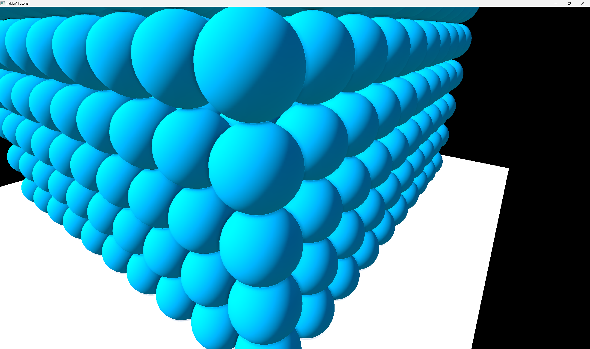
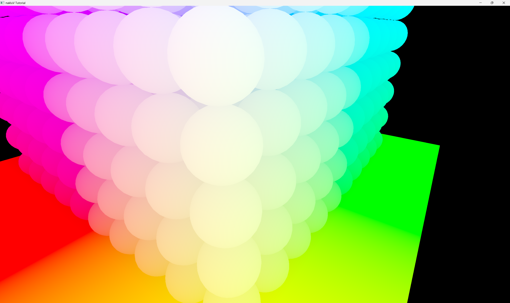
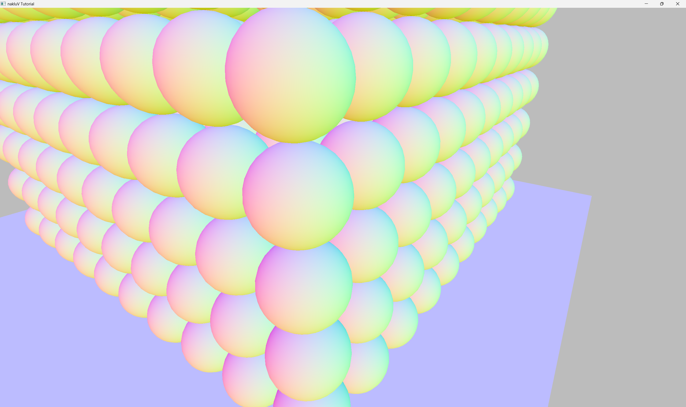
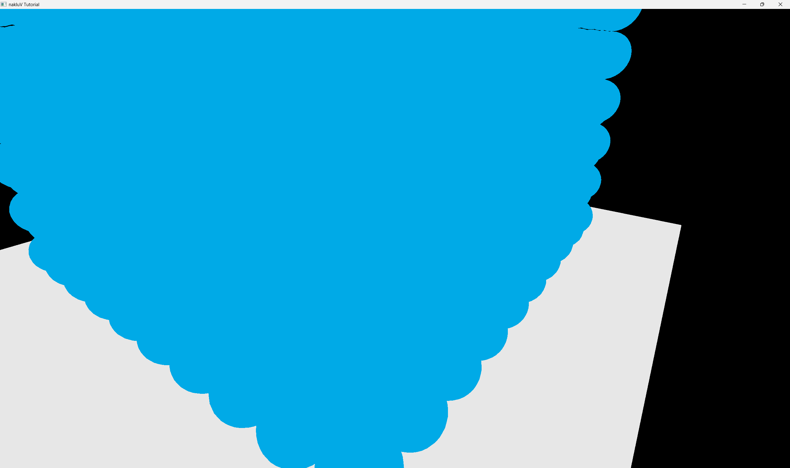
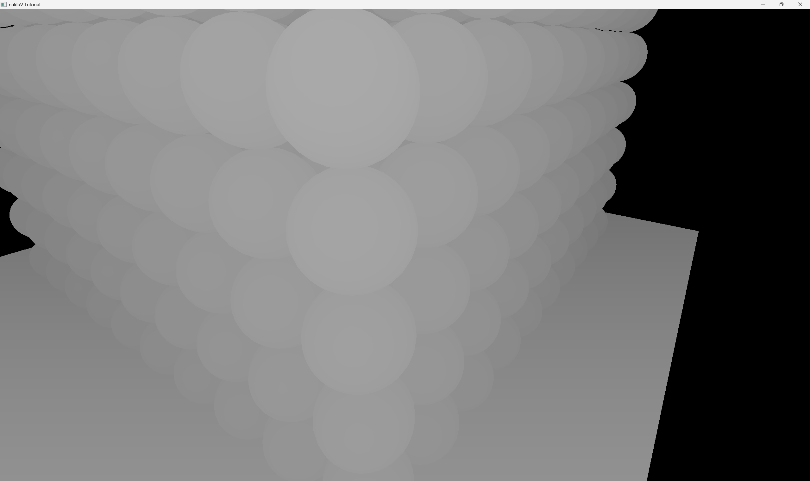
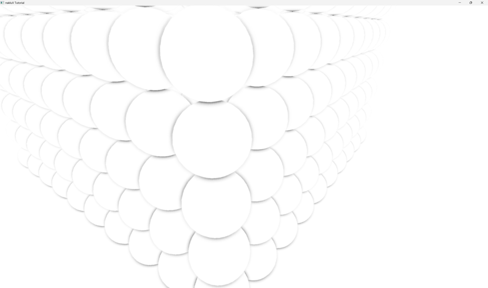
Screen-space ambient occlusion (SSAO) darkens ambient light in creases, corners, and areas where nearby geometry occludes the hemisphere above a surface point. I implemented it as two additional fullscreen passes inserted between the G-buffer pass and the main render pass: an SSAO sampling pass that produces a single-channel occlusion texture, and a blur pass that smooths the noisy raw output. The blurred result is then read by the deferred lighting shader and multiplied into the ambient and IBL terms.
The G-buffer stores positions and normals in world space, but the SSAO algorithm operates in view space, following the approach described in the LearnOpenGL SSAO tutorial and the Ritschel SSDO paper.
Rather than modifying the G-buffer layout, the SSAO shader transforms the sampled world-space position and normal to view space using a VIEW_FROM_WORLD matrix provided via a dedicated UBO.
This keeps the existing deferred lighting path entirely untouched.
To support this, I refactored the camera matrix computation in Tutorial::update().
The original CLIP_FROM_WORLD = perspective(...) * view(...) was split into its two components: VIEW_FROM_WORLD (the view matrix alone) and CLIP_FROM_VIEW (the projection matrix alone).
Both are stored as mat4 members of Tutorial and computed for all three camera modes (scene, user, debug).
CLIP_FROM_WORLD is then reassembled as their product to keep all existing code working.
At startup, generate_ssao_kernel() in SSAO/SSAO.cpp produces 64 sample offsets distributed over a unit hemisphere in tangent space.
Each sample is a random point with positive z (pointing along the surface normal), rejection-sampled to lie within the unit sphere.
Samples are normalized and then scaled by a quadratically-interpolated factor that concentrates more samples closer to the origin, so nearby geometry has more influence than distant geometry.
All 64 samples are always stored in the UBO; the sample_count field controls how many the shader actually iterates over at runtime.
A persistent 4×4 noise texture is created once at startup by create_ssao_noise_texture().
It stores 16 random tangent-space rotation vectors as R16G16B16A16_SFLOAT texels, each with z = 0 and xy normalized.
The texture is sampled with VK_SAMPLER_ADDRESS_MODE_REPEAT and nearest filtering, so it tiles seamlessly across the screen.
In the shader, the texture coordinate is scaled by (swapchain_width / 4, swapchain_height / 4) to produce a different random rotation every 4×4 pixel block.
This rotation is used to build a per-fragment TBN matrix via Gram–Schmidt orthogonalization of the noise vector against the view-space normal, which randomizes the sample hemisphere orientation and breaks up banding artifacts without requiring an impractically large number of samples.
An SSAOParams struct is declared in Tutorial.hpp under the // SSAO section.
It contains the VIEW_FROM_WORLD and CLIP_FROM_VIEW matrices, the 64-element sample kernel, noise_scale for tiling the noise texture, a sampling radius (default 0.5), a depth bias (default 0.025), and a sample_count field.
The struct is laid out to match GLSL std140 rules, with explicit padding to align to 16 bytes.
The sample count is exposed as a runtime parameter: the --ssao-samples N command-line argument (parsed in RTG::Configuration, clamped to [1, 64]) sets ssao_sample_count in Tutorial.
The shader reads this value from the UBO and loops for (uint i = 0; i < sample_count; i++), dividing the accumulated occlusion by sample_count at the end.
This allows sweeping sample counts (e.g., 8, 16, 32, 64) for performance and quality analysis without recompilation.
Each workspace gets a pair of host-visible staging and device-local UBO buffers (ssao_params_src, ssao_params), plus a descriptor set pointing the UBO binding at the device-local buffer.
The UBO is filled and uploaded per frame in Tutorial::render() immediately before the SSAO pass, with a pipeline barrier ensuring the transfer completes before the fragment shader reads it.
Two R8_UNORM images are created at swapchain resolution: ssao_image (raw SSAO output) and ssao_blur_image (blurred result), each with COLOR_ATTACHMENT_BIT | SAMPLED_BIT.
A single VkRenderPass called ssao_render_pass is shared by both passes; it has one R8_UNORM color attachment with loadOp = CLEAR, storeOp = STORE, and finalLayout = SHADER_READ_ONLY_OPTIMAL, plus a subpass dependency that synchronizes color attachment writes with subsequent fragment shader reads.
Two separate framebuffers attach ssao_image_view and ssao_blur_image_view to this shared render pass.
These resources are created and destroyed in create_ssao_images() and destroy_ssao_images() in SSAO/SSAO.cpp, called from on_swapchain() and destroy_framebuffers() alongside the G-buffer images.
The SSAOPipeline struct is declared in Tutorial.hpp and implemented in SSAO/SSAOPipeline.cpp.
It is a fullscreen triangle pipeline using SSAO/fullscreen.vert and SSAO/ssao.frag, with no vertex input, no depth testing, no blending, and culling disabled.
Its pipeline layout has three descriptor sets: set 0 reuses deferred_set0_GBuffer (the five G-buffer + SSAO bindings), set 1 binds the SSAOParams UBO, and set 2 binds the noise texture as a combined image sampler.
The color write mask is R-only since the output is a single float.
The fragment shader SSAO/ssao.frag implements the core algorithm.
For each fragment, it first checks the G-buffer depth; background pixels (depth ≥ 1.0) immediately output 1.0 (no occlusion) and return.
Otherwise, it samples the world-space position and normal from the G-buffer and transforms them to view space using VIEW_FROM_WORLD.
The noise texture is sampled at the tiled coordinate to get a random rotation vector, which is orthogonalized against the view-space normal via Gram–Schmidt to build a TBN matrix.
For each of the sample_count kernel samples, the shader transforms the tangent-space offset through TBN to view space, scales by radius, and adds to the fragment's view-space position to get a candidate sample point.
This point is projected to screen coordinates via CLIP_FROM_VIEW, perspective-divided, and remapped to [0, 1] UV.
Samples that fall outside the screen are skipped.
At the projected UV, the shader checks the G-buffer depth: if the sampled pixel is background (depth ≥ 1.0), it is also skipped to prevent false occlusion halos at object silhouettes against the sky.
For valid samples, the world-space position at the projected UV is transformed to view space, and its z-component is compared against the candidate sample's z-component.
If the actual surface is closer to the camera than the sample (i.e., the sample is behind geometry), occlusion is accumulated, modulated by a smoothstep range check that attenuates contributions from geometry that is too far away relative to the sampling radius.
The final output is 1.0 - (occlusion / sample_count).
Without background check:
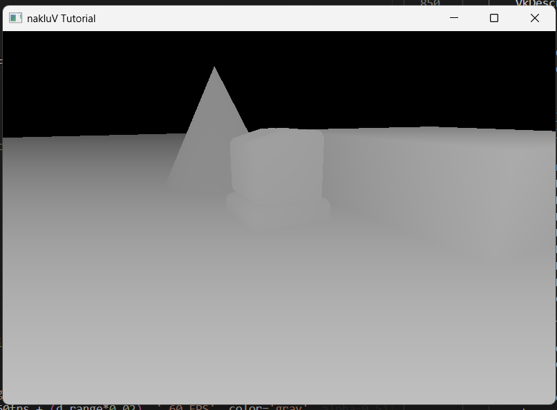
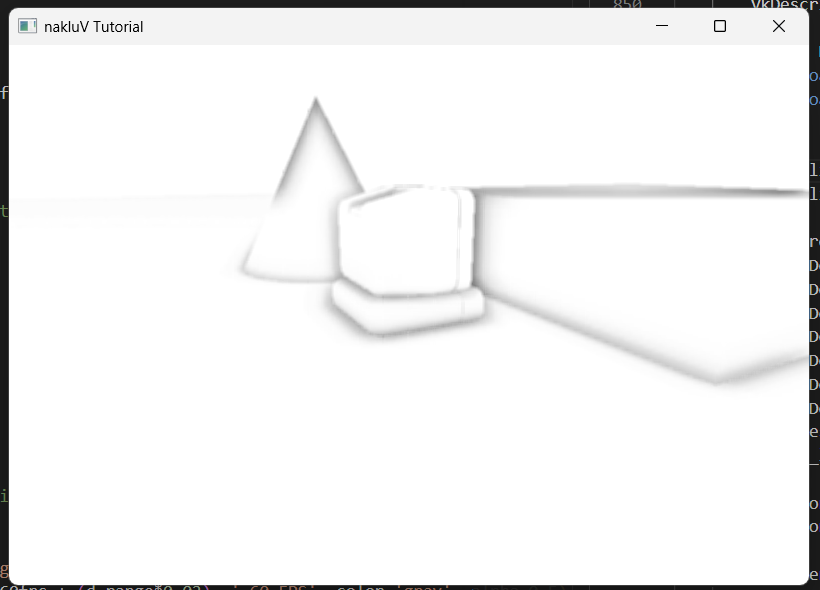
With background check:
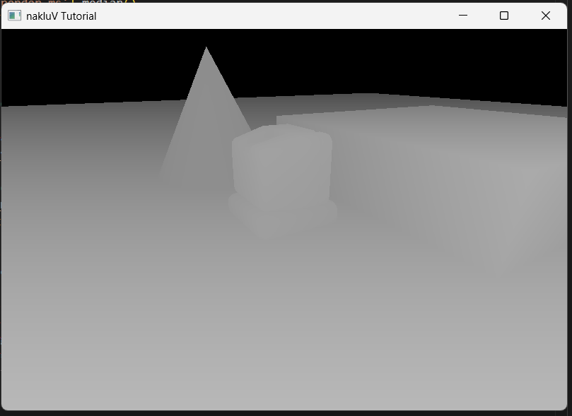
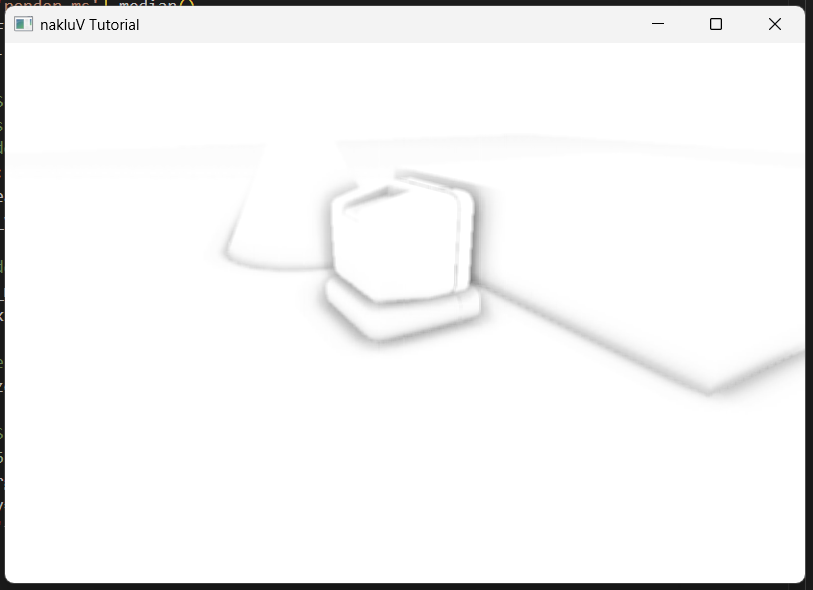
The raw SSAO texture exhibits high-frequency noise from the 4×4 tiled rotation pattern.
A simple 4×4 box blur smooths this out.
The SSAOBlurPipeline is implemented in SSAO/SSAOBlurPipeline.cpp as a fullscreen triangle pipeline with a single descriptor set binding the raw SSAO texture at set 0.
The fragment shader SSAO/ssao_blur.frag averages the 16 texels in a 4×4 neighborhood centered at half-texel offsets (x ∈ [−2, 1], y ∈ [−2, 1], each shifted by 0.5) and outputs the result.
A dedicated ssao_descriptor_pool is created in create_ssao_descriptors() to hold per-workspace UBO descriptor sets, per-workspace raw-SSAO-texture descriptor sets, and one shared noise texture descriptor set.
Three new descriptor set layouts are defined: ssao_params_set_layout (one UBO binding), ssao_noise_set_layout (one combined image sampler), and ssao_blur_input_set_layout (one combined image sampler for the raw SSAO texture).
The noise descriptor set is allocated once and pointed at the noise texture view with the repeat sampler.
Per-workspace descriptors are updated in update_ssao_descriptors() whenever the SSAO images are recreated on swapchain resize.
I extended the existing deferred_set0_GBuffer descriptor set layout from four bindings to five, adding binding 4 for the blurred SSAO texture.
update_deferred_descriptors() now writes the blurred SSAO image view into this fifth binding, so the deferred lighting shader can read it at set 0, binding 4 without any changes to the pipeline layout or set binding calls in the render loop.
(This layout was later extended again to six bindings for SSDO — see the SSDO section below.)
In Tutorial::render(), two new render passes are inserted between the G-buffer pass and the main render pass.
First, the SSAOParams UBO is filled with the current frame's VIEW_FROM_WORLD, CLIP_FROM_VIEW, the 64 kernel samples, the noise scale, radius, bias, and sample count, then copied from the staging buffer to the device-local buffer with a memory barrier.
The SSAO pass then begins ssao_render_pass with ssao_framebuffer, binds the SSAO pipeline with the G-buffer descriptors (set 0), SSAO params (set 1), and noise texture (set 2), and draws a fullscreen triangle.
The blur pass immediately follows using the same render pass but with ssao_blur_framebuffer, binding the blur pipeline with the raw SSAO texture as input.
In SSAO/deferred_lighting.frag, a new sampler gSSAO at set 0, binding 4 reads the blurred occlusion texture.
For each fragment, the shader samples float ao = texture(gSSAO, texCoord).r.
This value is multiplied into the ambient and IBL terms: for PBR materials, both the diffuse IBL irradiance and the specular IBL contribution are scaled by ao; for Lambertian materials, the IBL irradiance is scaled by ao.
Direct lighting from point, spot, and sun lights is intentionally not scaled by AO, since direct light sources have their own shadow maps to handle occlusion.
Environment and mirror material types also have their cubemap lookups scaled by ao.
The SSAO output can be inspected by pressing V in debug camera mode to cycle to the SSAO view (mode 5), or by starting with --debug-view ssao.
The debug fragment shader SSAO/debug_gbuffer.frag was extended with a new branch that samples the blurred AO texture and displays it as a grayscale image, where white represents no occlusion and black represents full occlusion.
Different sample count (4, 8, 16, 32, 64):
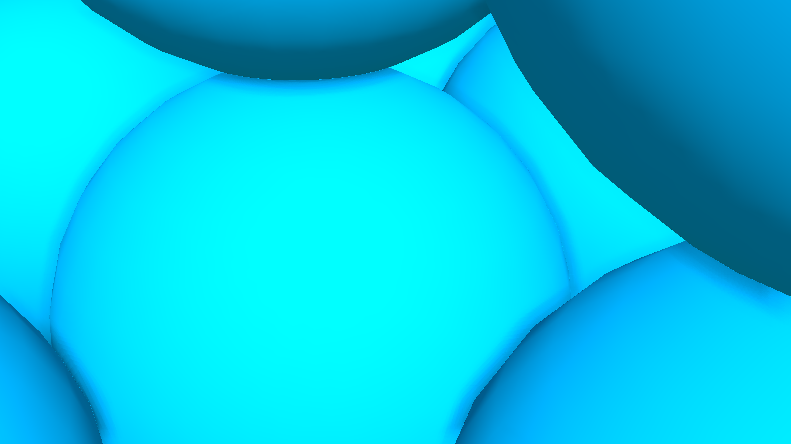
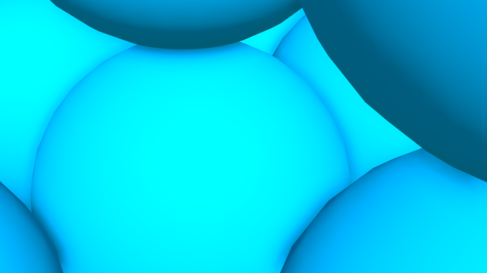
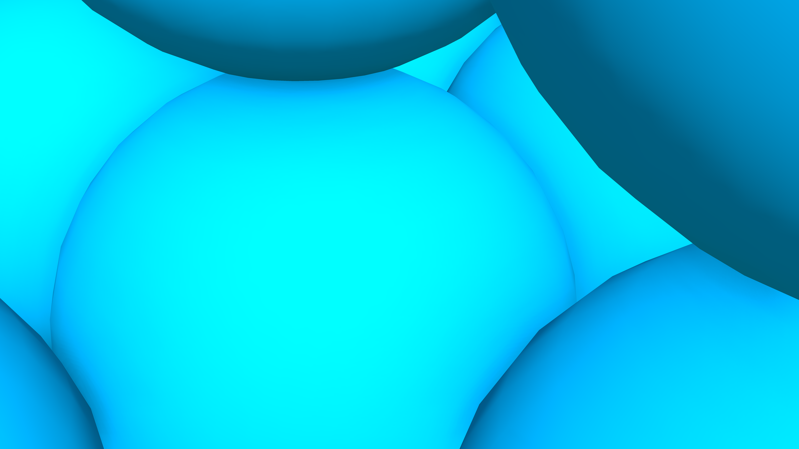
Screen-space directional occlusion (SSDO) extends SSAO by adding one-bounce indirect illumination — color bleeding from nearby surfaces. Where SSAO just computes a scalar “how much ambient light is blocked,” SSDO asks “what light is the blocking geometry bouncing back toward this point?” The result is an RGB indirect bounce texture that gets added to the final lighting, giving colored soft reflections between nearby surfaces (e.g., a red wall tinting a nearby white floor pink). I implemented SSDO as a completely separate pass from SSAO, running right after the SSAO blur and before the main render pass. Both effects run every frame: SSAO produces scalar ambient darkening, and SSDO adds colored indirect light on top. They’re complementary rather than redundant.
Since the SSDO pass outputs RGB color (not just a scalar), I use R16G16B16A16_SFLOAT images instead of the R8_UNORM that SSAO uses.
Half-float is necessary because the indirect bounce can exceed [0, 1] in HDR scenes.
I created ssdo_image (raw output) and ssdo_blur_image (blurred result), each with COLOR_ATTACHMENT_BIT | SAMPLED_BIT, at swapchain resolution.
A new render pass ssdo_render_pass is created in create_ssdo_render_pass() in SSAO/SSAO.cpp.
It’s identical in structure to ssao_render_pass but with R16G16B16A16_SFLOAT as the attachment format instead of R8_UNORM.
Two separate framebuffers attach ssdo_image_view and ssdo_blur_image_view to this render pass.
These resources are managed in create_ssdo_images() and destroy_ssdo_images(), called from on_swapchain() and destroy_framebuffers() alongside the SSAO images.
The SSDOPipeline struct is declared in Tutorial.hpp and implemented in SSAO/SSDOPipeline.cpp.
It’s a fullscreen triangle pipeline using SSAO/fullscreen.vert and SSAO/ssdo.frag, with the same no-vertex-input, no-depth, no-cull setup as the SSAO pipeline, but with an RGBA color write mask since the output is RGB.
The pipeline layout has five descriptor sets: set 0 reuses deferred_set0_GBuffer (the G-buffer textures), set 1 binds the SSAOParams UBO (same kernel, matrices, and parameters as SSAO — no extra UBO needed), set 2 binds the noise texture, set 3 binds the World UBO (for sky/sun energy and the has_lambertian flag), and set 4 binds the Lambertian cubemap.
The extra two sets compared to SSAO are needed because the SSDO shader has to estimate the irradiance arriving at each blocker surface.
The fragment shader SSAO/ssdo.frag shares the same hemisphere sampling structure as ssao.frag — it reads the same SSAOParams UBO, builds the same TBN from the noise texture, and projects samples the same way.
The key difference is what happens for occluded samples.
In SSAO, an occluded sample just increments a scalar occlusion counter.
In SSDO, I do something more useful with it: for each occluded sample, the shader reads the blocker’s surface data and computes how much light it bounces back.
Specifically, for each occluded sample, the shader:
gAlbedo and its world-space normal from gNormal at the projected screen UV.has_lambertian == 1), it samples LAMBERTIAN_CUBEMAP at the blocker’s world-space normal; otherwise it falls back to the sky/sun energy approximation, the same formula used by the deferred lighting shader.VIEW_FROM_WORLD.
The form factor is cos_receiver × cos_sender × rangeCheck, where cos_receiver is the cosine of the angle between the shading point’s view-space normal and the direction to the blocker, cos_sender is the cosine between the negative of that direction and the blocker’s view-space normal, and rangeCheck is the same smoothstep attenuation used in SSAO to fade out contributions from geometry outside the sampling radius.blockerAlbedo × blockerIrradiance × formFactor into the indirect color sum.
The final output is indirect / sample_count.
Background pixels (depth ≥ 1.0) output vec4(0) — no indirect bounce from the sky.
The cos_receiver × cos_sender product means only surfaces that face each other exchange light, which is physically correct and naturally avoids back-facing contributions.
The raw SSDO texture has the same 4×4 tiled noise pattern as SSAO, so it gets the same treatment: a 4×4 box blur.
The SSDOBlurPipeline is implemented in SSAO/SSDOBlurPipeline.cpp as a fullscreen triangle pipeline with a single descriptor set for the raw SSDO texture.
The fragment shader SSAO/ssdo_blur.frag averages the 16 texels in a 4×4 neighborhood (same offset pattern as the SSAO blur) but operates on RGB channels instead of a single float.
I created a dedicated ssdo_descriptor_pool in create_ssdo_descriptors() for per-workspace SSDO descriptors.
Each workspace gets an SSDOWorkspace with a ssdo_raw_descriptors set that binds the raw SSDO image for the blur pass.
I reused the existing ssao_blur_input_set_layout for this since the layout is identical — one combined image sampler at binding 0.
Per-workspace descriptors are updated in update_ssdo_descriptors() on swapchain resize.
The deferred_set0_GBuffer layout was extended from five bindings (the four G-buffer textures plus SSAO at binding 4) to six, adding binding 5 for the blurred SSDO texture.
update_deferred_descriptors() now writes both the SSAO blur image view into binding 4 and the SSDO blur image view into binding 5, so the deferred lighting shader can read both at set 0 without any changes to the pipeline layout or set binding calls in the render loop.
The deferred_descriptor_pool was also bumped from 5 × per_workspace to 6 × per_workspace combined image sampler descriptors to accommodate the extra binding.
In Tutorial::render(), two new render passes are inserted after the SSAO blur pass and before the main render pass.
The SSDO pass begins ssdo_render_pass with ssdo_framebuffer (cleared to black — zero indirect bounce by default), binds the SSDO pipeline with the G-buffer descriptors (set 0), the same SSAO params UBO (set 1), the noise texture (set 2), the World UBO (set 3), and the Lambertian cubemap (set 4), and draws a fullscreen triangle.
No additional UBO upload is needed — the SSDO pass reuses the exact same SSAOParams UBO that was already uploaded for the SSAO pass earlier in the frame, so the kernel, matrices, radius, bias, and sample count are all shared.
The SSDO blur pass follows immediately using the same ssdo_render_pass but with ssdo_blur_framebuffer, binding the blur pipeline with the raw SSDO texture as input.
The full render order is now:
In SSAO/deferred_lighting.frag, I added a new sampler gSSDO at set 0, binding 5 that reads the blurred indirect bounce texture.
The shader samples vec3 indirect_bounce = texture(gSSDO, texCoord).rgb and adds it to the final radiance for all material types.
Unlike SSAO’s scalar ao which multiplies into ambient terms (darkening), the SSDO indirect bounce is purely additive — it represents new light arriving at the surface from nearby colored geometry.
For PBR and Lambertian materials, indirect_bounce is added after the diffuse + specular computation.
For environment and mirror materials, it’s added after the cubemap lookup.
The idea is that even a mirror or environment-sampled surface can receive some bounced light from nearby geometry.
The SSDO output can be inspected by pressing V in debug camera mode to cycle to the SSDO view (mode 6), or by starting with --debug-view ssdo.
I extended the debug fragment shader SSAO/debug_gbuffer.frag with a new branch that displays the blurred SSDO texture as an RGB color image, making it easy to see where color bleeding is happening and how strong it is.
Areas with no nearby occluders show up as black (no indirect bounce), while areas near colored surfaces show the bounced color.
SSDO debug visuals:
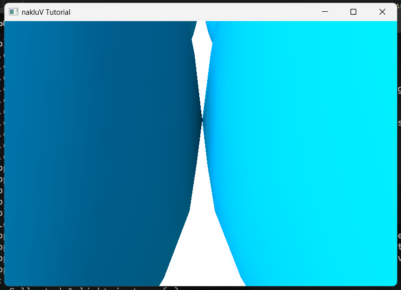
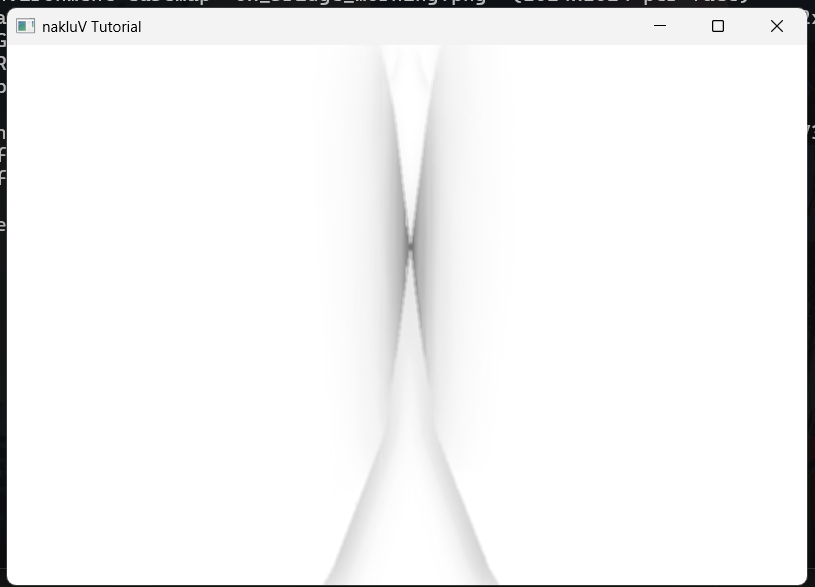
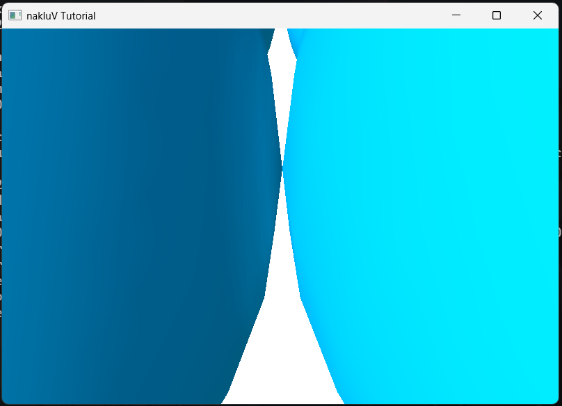
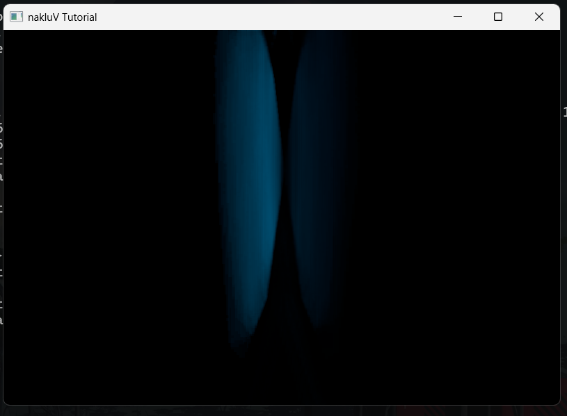
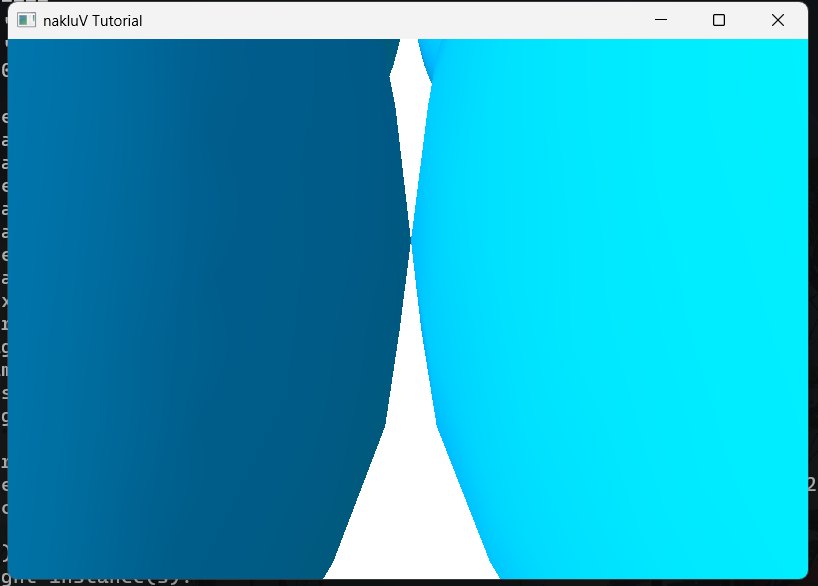